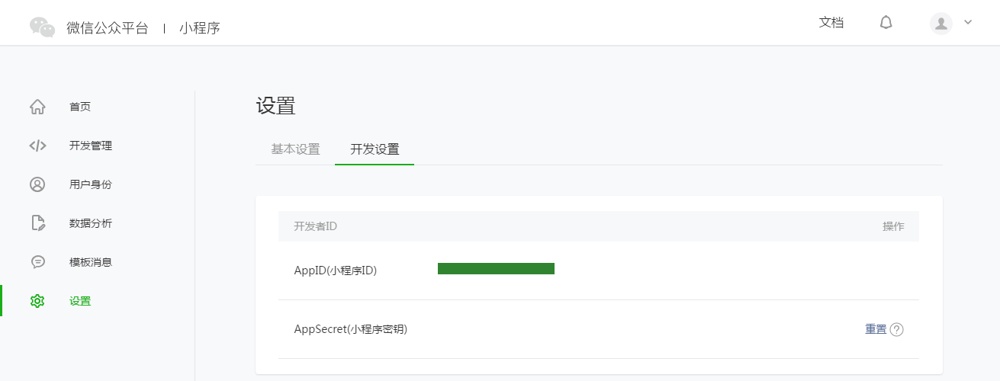
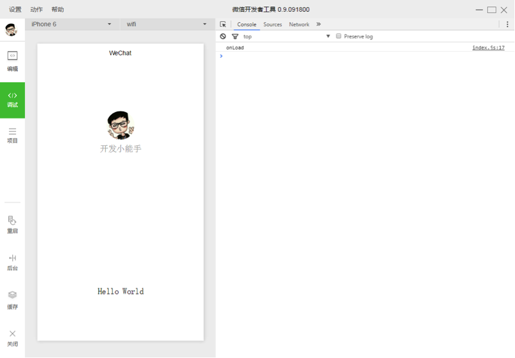
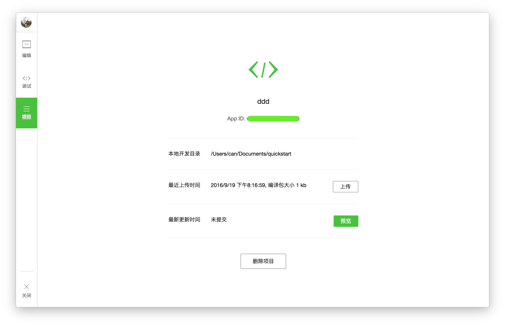

<html lang="">
<head>
    <title>简易教程 · MINA</title>
    <meta charset="UTF-8">
    <meta http-equiv="X-UA-Compatible" content="IE=edge">
    <meta content="text/html; charset=utf-8" http-equiv="Content-Type">
    <meta name="description" content="">
    <meta name="generator" content="GitBook 3.2.0">


    <link rel="stylesheet" href="../gitbook/style.css">


    <link rel="stylesheet" href="../gitbook/gitbook-plugin-highlight/website.css">


    <link rel="stylesheet" href="../gitbook/gitbook-plugin-search/search.css">


    <meta name="HandheldFriendly" content="true">
    <meta name="viewport" content="width=device-width, initial-scale=1, user-scalable=no">
    <meta name="apple-mobile-web-app-capable" content="yes">
    <meta name="apple-mobile-web-app-status-bar-style" content="black">
    <link rel="apple-touch-icon-precomposed" sizes="152x152"
          href="../gitbook/images/apple-touch-icon-precomposed-152.png">
    <link rel="shortcut icon" href="../gitbook/images/favicon.ico" type="image/x-icon">


    <link rel="next" href="demo.html">


</head>
<body>

<div class="book with-summary">
    <div>

        <div class="sub_nav_box">
            <div class="sub_nav_inner">


                <ul class="top_sub_nav">


                    <li class="sub_nav_item selected" data-level="1.1" data-path="./">

                        <a href="./">


                            简易教程

                        </a>

                    </li>

                    <li class="sub_nav_item " data-level="1.2" data-path="framework/MINA.html">

                        <a href="framework/MINA.html">


                            框架

                        </a>

                    </li>

                    <li class="sub_nav_item " data-level="1.3" data-path="component/">

                        <a href="component/">


                            组件

                        </a>

                    </li>

                    <li class="sub_nav_item " data-level="1.4" data-path="api/">

                        <a href="api/">


                            API

                        </a>

                    </li>

                    <li class="sub_nav_item " data-level="1.5" data-path="devtools/devtools.html">

                        <a href="devtools/devtools.html">


                            工具

                        </a>

                    </li>

                    <li class="sub_nav_item " data-level="1.6" data-path="qa/qa.html">

                        <a href="qa/qa.html">


                            Q&amp;A

                        </a>

                    </li>
                    <li class="sub_nav_item " data-level="1.7" data-path="introduction/">

                        <a href="introduction">


                            介绍

                        </a>

                    </li>
                    <li class="sub_nav_item " data-level="1.9" data-path="design/">

                        <a href="design">


                            设计

                        </a>

                    </li>
                    <li class="sub_nav_item " data-level="1.8" data-path="product/">

                        <a href="product">


                            运营

                        </a>

                    </li>

                    <li class="sub_nav_item " data-level="1.9">

                        <a href="https://github.com/Notedown-cn/wxopen" style="font-size: 12px;">
                            文档Github打包下载
                        </a>

                    </li>


                </ul>


                <!-- <h1>简易教程</h1> -->
                <div id="book-search-input" role="search">
                    <form>
                        <label for="search-input" class="search-icon" id="js-search-icon"></label>
                        <input type="text" id="search-input" name="search-input" placeholder="搜索">
                        <button type="reset" class="clear-input-btn"></button>
                    </form>
                </div>
            </div>
        </div>

        <div class="book-summary">


            <nav role="navigation">


                <ul class="summary">


                    <li class="chapter active " data-level="1.1.1" data-path="./">

                        <a href="./">


                            简易教程

                        </a>


                    </li>

                    <li class="chapter  " data-level="1.1.2" data-path="demo.html">

                        <a href="demo.html">


                            体验小程序

                        </a>


                    </li>


                </ul>


            </nav>


        </div>

        <div class="book-body">

            <div class="body-inner">

                <!--

                <div class="book-header" role="navigation">

                </div>


                 -->

                <div class="page-wrapper" tabindex="-1" role="main">
                    <div class="page-inner">

                        <div id="book-search-results">
                            <div class="search-noresults">

                                <section class="normal markdown-section">

                                    <p>​
                                        本文档将带你一步步创建完成一个微信小程序，并可以在手机上体验该小程序的实际效果。这个小程序的首页将会显示欢迎语以及当前用户的微信头像，点击头像，可以在新开的页面中查看当前小程序的启动日志。<a
                                                href="demo/quickstart.zip">下载源码</a></p>
                                    <h3 id="1-获取微信小程序的appid">1. 获取微信小程序的AppID</h3>
                                    <p>首先，我们需要拥有一个帐号，如果你能看到该文档，我们应当已经邀请并为你创建好一个帐号。注意不可直接使用服务号或订阅号的AppID。
                                        利用提供的帐号，登录<a href="https://mp.weixin.qq.com/" target="_blank">https://mp.weixin.qq.com</a>
                                        ，就可以在网站的“设置”-“开发者设置”中，查看到微信小程序的AppID了。</p>
                                    <p></p>
                                    <p><strong>注意：如果我们不是用注册时绑定的管理员微信号，在手机上体验该小程序。那么我们还需要操作“绑定开发者”。即在“用户身份”-“开发者”模块，绑定上需要体验该小程序的微信号。本教程默认注册帐号、体验都是使用管理员微信号。</strong>
                                    </p>
                                    <h3 id="2-创建项目">2. 创建项目</h3>
                                    <p>​ 我们需要通过<a href="devtools/devtools.html">开发者工具</a>，来完成小程序创建和代码编辑。</p>
                                    <p>​
                                        开发者工具安装完成后，打开并使用微信扫码登录。选择创建“项目”，填入上文获取到的AppID，设置一个本地项目的名称（非小程序名称），比如“我的第一个项目”，并选择一个本地的文件夹作为代码存储的目录，点击“新建项目”就可以了。</p>
                                    <p>​ 为方便初学者了解微信小程序的基本代码结构，在创建过程中，如果选择的本地文件夹是个空文件夹，开发者工具会提示，是否需要创建一个quick
                                        start项目。选择“是”，开发者工具会帮助我们在开发目录里生成一个简单的demo。</p>
                                    <p></p>
                                    <p>​
                                        项目创建成功后，我们就可以点击该项目，进入并看到完整的开发者工具界面，点击左侧导航，在“编辑”里可以查看和编辑我们的代码，在“调试”里可以测试代码并模拟小程序在微信客户端效果，在“项目”里可以发送到手机里预览实际效果。</p>
                                    <h3 id="3-编写代码">3. 编写代码</h3><h4 id="创建小程序实例">创建小程序实例</h4>
                                    <p>​
                                        点击开发者工具左侧导航的“编辑”，我们可以看到这个项目，已经初始化并包含了一些简单的代码文件。最关键也是必不可少的，是app.js、app.json、app.wxss这三个。其中，<code>.js</code>后缀的是脚本文件，<code>.json</code>后缀的文件是配置文件，<code>.wxss</code>后缀的是样式表文件。微信小程序会读取这些文件，并生成<a
                                                href="framework/app-service/app.html">小程序实例</a>。</p>
                                    <p>​ 下面我们简单了解这三个文件的功能，方便修改以及从头开发自己的微信小程序。</p>
                                    <p>​
                                        app.js是小程序的脚本代码。我们可以在这个文件中监听并处理小程序的生命周期函数、声明全局变量。调用MINA提供的丰富的API，如本例的同步存储及同步读取本地数据。想了解更多可用API，可参考<a
                                                href="api/">API文档</a></p><pre><code class="lang-javascript"><span
                                        class="hljs-comment">//app.js</span>
App({
  onLaunch: <span class="hljs-function"><span class="hljs-keyword">function</span> (<span class="hljs-params"></span>) </span>{
    <span class="hljs-comment">//调用API从本地缓存中获取数据</span>
    <span class="hljs-keyword">var</span> logs = wx.getStorageSync(<span class="hljs-string">'logs'</span>) || []
    logs.unshift(<span class="hljs-built_in">Date</span>.now())
    wx.setStorageSync(<span class="hljs-string">'logs'</span>, logs)
  },
  getUserInfo:<span class="hljs-function"><span class="hljs-keyword">function</span>(<span class="hljs-params">cb</span>)</span>{
    <span class="hljs-keyword">var</span> that = <span class="hljs-keyword">this</span>;
    <span class="hljs-keyword">if</span>(<span class="hljs-keyword">this</span>.globalData.userInfo){
      <span class="hljs-keyword">typeof</span> cb == <span class="hljs-string">"function"</span> &amp;&amp; cb(<span
                                            class="hljs-keyword">this</span>.globalData.userInfo)
    }<span class="hljs-keyword">else</span>{
      <span class="hljs-comment">//调用登录接口</span>
      wx.login({
        success: <span class="hljs-function"><span class="hljs-keyword">function</span> (<span
                                            class="hljs-params"></span>) </span>{
          wx.getUserInfo({
            success: <span class="hljs-function"><span class="hljs-keyword">function</span> (<span class="hljs-params">res</span>) </span>{
              that.globalData.userInfo = res.userInfo;
              <span class="hljs-keyword">typeof</span> cb == <span class="hljs-string">"function"</span> &amp;&amp; cb(that.globalData.userInfo)
            }
          })
        }
      });
    }
  },
  globalData:{
    userInfo:<span class="hljs-literal">null</span>
  }
})</code></pre>
                                    <p>​
                                        app.json是对整个小程序的全局配置。我们可以在这个文件中配置小程序是由哪些页面组成，配置小程序的窗口背景色，配置导航条样式，配置默认标题。注意该文件不可添加任何注释。更多可配置项可参考<a
                                                href="framework/config.html">配置详解</a></p><pre><code class="lang-json">{
  <span class="hljs-string">"pages"</span>:[
    <span class="hljs-string">"pages/index/index"</span>,
    <span class="hljs-string">"pages/logs/logs"</span>
  ],
  <span class="hljs-string">"window"</span>:{
    <span class="hljs-string">"backgroundTextStyle"</span>:<span class="hljs-string">"light"</span>,
    <span class="hljs-string">"navigationBarBackgroundColor"</span>: <span class="hljs-string">"#fff"</span>,
    <span class="hljs-string">"navigationBarTitleText"</span>: <span class="hljs-string">"WeChat"</span>,
    <span class="hljs-string">"navigationBarTextStyle"</span>:<span class="hljs-string">"black"</span>
  }
}</code></pre>
                                    <p>​ app.wxss是整个小程序的公共样式表。我们可以在页面组件的class属性上直接使用app.wxss中声明的样式规则。</p><pre><code
                                        class="lang-css"><span class="hljs-comment">/**app.wxss**/</span>
<span class="hljs-selector-class">.container</span> {
  <span class="hljs-attribute">height</span>: <span class="hljs-number">100%</span>;
  <span class="hljs-attribute">display</span>: flex;
  <span class="hljs-attribute">flex-direction</span>: column;
  <span class="hljs-attribute">align-items</span>: center;
  <span class="hljs-attribute">justify-content</span>: space-between;
  <span class="hljs-attribute">padding</span>: <span class="hljs-number">200</span>rpx <span
                                            class="hljs-number">0</span>;
  <span class="hljs-attribute">box-sizing</span>: border-box;
}</code></pre>
                                    <h4 id="创建页面">创建页面</h4>
                                    <p>​
                                        在这个教程里，我们有两个页面，index页面和logs页面，即欢迎页和小程序启动日志的展示页，他们都在pages目录下。微信小程序中的每一个页面的【路径+页面名】都需要写在app.json的pages中，且pages中的第一个页面是小程序的首页。</p>
                                    <p>​ 每一个<a href="framework/app-service/page.html">小程序页面</a>是由同路径下同名的四个不同后缀文件的组成，如：index.js、index.wxml、index.wxss、index.json。<code>.js</code>后缀的文件是脚本文件，<code>.json</code>后缀的文件是配置文件，<code>.wxss</code>后缀的是样式表文件，<code>.wxml</code>后缀的文件是页面结构文件。
                                    </p>
                                    <p>​ index.wxml是页面的结构文件：</p><pre><code class="lang-html"><span class="hljs-comment">&lt;!--index.wxml--&gt;</span>
<span class="hljs-tag">&lt;<span class="hljs-name">view</span> <span class="hljs-attr">class</span>=<span
        class="hljs-string">"container"</span>&gt;</span>
  <span class="hljs-tag">&lt;<span class="hljs-name">view</span>  <span class="hljs-attr">bindtap</span>=<span
          class="hljs-string">"bindViewTap"</span> <span class="hljs-attr">class</span>=<span class="hljs-string">"userinfo"</span>&gt;</span>
    <span class="hljs-tag">&lt;<span class="hljs-name">image</span> <span class="hljs-attr">class</span>=<span
            class="hljs-string">"userinfo-avatar"</span> <span class="hljs-attr">src</span>=<span class="hljs-string">"{{userInfo.avatarUrl}}"</span> <span
            class="hljs-attr">background-size</span>=<span class="hljs-string">"cover"</span>&gt;</span><span
                                            class="hljs-tag">&lt;/<span class="hljs-name">image</span>&gt;</span>
    <span class="hljs-tag">&lt;<span class="hljs-name">text</span> <span class="hljs-attr">class</span>=<span
            class="hljs-string">"userinfo-nickname"</span>&gt;</span>{{userInfo.nickName}}<span
                                            class="hljs-tag">&lt;/<span class="hljs-name">text</span>&gt;</span>
  <span class="hljs-tag">&lt;/<span class="hljs-name">view</span>&gt;</span>
  <span class="hljs-tag">&lt;<span class="hljs-name">view</span> <span class="hljs-attr">class</span>=<span
          class="hljs-string">"usermotto"</span>&gt;</span>
    <span class="hljs-tag">&lt;<span class="hljs-name">text</span> <span class="hljs-attr">class</span>=<span
            class="hljs-string">"user-motto"</span>&gt;</span>{{motto}}<span class="hljs-tag">&lt;/<span
                                            class="hljs-name">text</span>&gt;</span>
  <span class="hljs-tag">&lt;/<span class="hljs-name">view</span>&gt;</span>
<span class="hljs-tag">&lt;/<span class="hljs-name">view</span>&gt;</span></code></pre>
                                    <p>​ 本例中使用了<a href="component/view.html"><code>&lt;view/&gt;</code></a>、<a
                                            href="component/image.html"><code>&lt;image/&gt;</code></a>、<a
                                            href="component/text.html"><code>&lt;text/&gt;</code></a>来搭建页面结构，绑定数据和交互处理函数。
                                    </p>
                                    <p>​ index.js是页面的脚本文件，在这个文件中我们可以监听并处理页面的生命周期函数、获取小程序实例，声明并处理数据，响应页面交互事件等。</p><pre><code
                                        class="lang-javascript"><span class="hljs-comment">//index.js</span>
<span class="hljs-comment">//获取应用实例</span>
<span class="hljs-keyword">var</span> app = getApp()
Page({
  data: {
    motto: <span class="hljs-string">'Hello World'</span>,
    userInfo: {}
  },
  <span class="hljs-comment">//事件处理函数</span>
  bindViewTap: <span class="hljs-function"><span class="hljs-keyword">function</span>(<span class="hljs-params"></span>) </span>{
    wx.navigateTo({
      url: <span class="hljs-string">'../logs/logs'</span>
    })
  },
  onLoad: <span class="hljs-function"><span class="hljs-keyword">function</span> (<span
                                            class="hljs-params"></span>) </span>{
    <span class="hljs-built_in">console</span>.log(<span class="hljs-string">'onLoad'</span>)
    <span class="hljs-keyword">var</span> that = <span class="hljs-keyword">this</span>
    <span class="hljs-comment">//调用应用实例的方法获取全局数据</span>
    app.getUserInfo(<span class="hljs-function"><span class="hljs-keyword">function</span>(<span class="hljs-params">userInfo</span>)</span>{
      <span class="hljs-comment">//更新数据</span>
      that.setData({
        userInfo:userInfo
      })
    })
  }
})</code></pre>
                                    <p>​ index.wxss是页面的样式表：</p><pre><code class="lang-css"><span class="hljs-comment">/**index.wxss**/</span>
<span class="hljs-selector-class">.userinfo</span> {
  <span class="hljs-attribute">display</span>: flex;
  <span class="hljs-attribute">flex-direction</span>: column;
  <span class="hljs-attribute">align-items</span>: center;
}

<span class="hljs-selector-class">.userinfo-avatar</span> {
  <span class="hljs-attribute">width</span>: <span class="hljs-number">128</span>rpx;
  <span class="hljs-attribute">height</span>: <span class="hljs-number">128</span>rpx;
  <span class="hljs-attribute">margin</span>: <span class="hljs-number">20</span>rpx;
  <span class="hljs-attribute">border-radius</span>: <span class="hljs-number">50%</span>;
}

<span class="hljs-selector-class">.userinfo-nickname</span> {
  <span class="hljs-attribute">color</span>: <span class="hljs-number">#aaa</span>;
}

<span class="hljs-selector-class">.usermotto</span> {
  <span class="hljs-attribute">margin-top</span>: <span class="hljs-number">200px</span>;
}</code></pre>
                                    <p>​
                                        页面的样式表是非必要的。当有页面样式表时，页面的样式表中的样式规则会层叠覆盖app.wxss中的样式规则。如果不指定页面的样式表，也可以在页面的结构文件中直接使用app.wxss中指定的样式规则。</p>
                                    <p>​ index.json是页面的配置文件：</p>
                                    <p>​
                                        页面的配置文件是非必要的。当有页面的配置文件时，配置项在该页面会覆盖app.json的window中相同的配置项。如果没有指定的页面配置文件，则在该页面直接使用app.json中的默认配置。</p>
                                    <p>​ logs的页面结构</p><pre><code class="lang-html"><span class="hljs-comment">&lt;!--logs.wxml--&gt;</span>
<span class="hljs-tag">&lt;<span class="hljs-name">view</span> <span class="hljs-attr">class</span>=<span
        class="hljs-string">"container log-list"</span>&gt;</span>
  <span class="hljs-tag">&lt;<span class="hljs-name">block</span> <span class="hljs-attr">wx:for-items</span>=<span
          class="hljs-string">"{{logs}}"</span> <span class="hljs-attr">wx:for-item</span>=<span class="hljs-string">"log"</span>&gt;</span>
    <span class="hljs-tag">&lt;<span class="hljs-name">text</span> <span class="hljs-attr">class</span>=<span
            class="hljs-string">"log-item"</span>&gt;</span>{{index + 1}}. {{log}}<span class="hljs-tag">&lt;/<span
                                            class="hljs-name">text</span>&gt;</span>
  <span class="hljs-tag">&lt;/<span class="hljs-name">block</span>&gt;</span>
<span class="hljs-tag">&lt;/<span class="hljs-name">view</span>&gt;</span></code></pre>
                                    <p>​ logs页面使用<a href="framework/view/wxml/list.html#block-wxfor"><code>&lt;block/&gt;</code></a>控制标签来组织代码，在<code>
                                        &lt;block/&gt;</code>上使用<a
                                            href="framework/view/wxml/list.html#block-wxfor"><code>wx:for-items</code></a>绑定<code>logs</code>数据，并将<code>logs</code>数据循环展开节点
                                    </p><pre><code class="lang-js"><span class="hljs-comment">//logs.js</span>
<span class="hljs-keyword">var</span> util = <span class="hljs-built_in">require</span>(<span class="hljs-string">'../../utils/util.js'</span>)
Page({
  data: {
    logs: []
  },
  onLoad: <span class="hljs-function"><span class="hljs-keyword">function</span> (<span
                                            class="hljs-params"></span>) </span>{
    <span class="hljs-keyword">this</span>.setData({
      logs: (wx.getStorageSync(<span class="hljs-string">'logs'</span>) || []).map(<span class="hljs-function"><span
                                            class="hljs-keyword">function</span> (<span class="hljs-params">log</span>) </span>{
        <span class="hljs-keyword">return</span> util.formatTime(<span class="hljs-keyword">new</span> <span
                                            class="hljs-built_in">Date</span>(log))
      })
    })
  }
})</code></pre>
                                    <p>运行结果如下：</p>
                                    <p></p>
                                    <h3 id="4-手机预览">4. 手机预览</h3>
                                    <p>​ 开发者工具左侧菜单栏选择"项目"，点击"预览"，扫码后即可在微信客户端中体验。</p>
                                    <p></p>

                                </section>

                            </div>
                            <div class="search-results">
                                <div class="has-results">

                                    <h1 class="search-results-title"><span class="search-results-count"></span> 个结果
                                        "<span class="search-query"></span>"</h1>
                                    <ul class="search-results-list"></ul>

                                </div>
                                <div class="no-results">

                                    <h1 class="search-results-title">没有找到相关内容 "<span class="search-query"></span>"</h1>

                                </div>
                            </div>
                        </div>

                    </div>
                </div>
                <div class="foot" id="footer">
                    <ul class="links ft">
                        <li class="links_item"><a href="">关于腾讯</a></li>
                        <li class="links_item"><a href="">服务协议</a></li>
                        <li class="links_item"><a href="">运营规范</a></li>
                        <li class="links_item"><a href="">辟谣中心</a></li>
                        <li class="links_item"><a href="">客服中心</a></li>
                        <li class="links_item"><a href="">联系邮箱</a></li>
                        <li class="links_item"><a href="">侵权投诉</a></li>
                        <li class="links_item">
                            <p class="copyright">Copyright © 2012-<span id="s_copyright_year"></span> Tencent. All
                                Rights Reserved.</p>
                        </li>
                    </ul>
                </div>

            </div>


            <a href="demo.html" class="navigation navigation-next navigation-unique" aria-label="Next page: 体验小程序">
                <i class="fa fa-angle-right"></i>
            </a>


        </div>
    </div>


    <script src="../gitbook/gitbook.js"></script>
    <script src="../gitbook/theme.js"></script>


    <script src="../gitbook/gitbook-plugin-search/search-engine.js"></script>


    <script src="../gitbook/gitbook-plugin-search/search.js"></script>


    <script src="../gitbook/gitbook-plugin-lunr/lunr.min.js"></script>


    <script src="../gitbook/gitbook-plugin-lunr/search-lunr.js"></script>


    <script>
        var gitbook = gitbook || [];
        gitbook.push(function () {
            gitbook.page.hasChanged({
                "page": {
                    "title": "简易教程",
                    "level": "1.1",
                    "depth": 1,
                    "next": {
                        "title": "体验小程序",
                        "level": "1.1.2",
                        "depth": 2,
                        "path": "demo.md",
                        "ref": "demo.md",
                        "articles": []
                    },
                    "dir": "ltr"
                },
                "config": {
                    "gitbook": "*",
                    "theme": "default",
                    "variables": {},
                    "plugins": [],
                    "pluginsConfig": {
                        "highlight": {},
                        "search": {},
                        "lunr": {"ignoreSpecialCharacters": false, "maxIndexSize": 1000000},
                        "theme-default": {
                            "showLevel": false,
                            "styles": {
                                "ebook": "styles/ebook.css",
                                "epub": "styles/epub.css",
                                "mobi": "styles/mobi.css",
                                "pdf": "styles/pdf.css",
                                "print": "styles/print.css",
                                "website": "styles/website.css"
                            }
                        }
                    },
                    "structure": {
                        "langs": "LANGS.md",
                        "readme": "README.md",
                        "glossary": "GLOSSARY.md",
                        "summary": "SUMMARY.md"
                    },
                    "pdf": {
                        "pageNumbers": true,
                        "fontSize": 12,
                        "fontFamily": "Arial",
                        "paperSize": "a4",
                        "chapterMark": "pagebreak",
                        "pageBreaksBefore": "/",
                        "margin": {"right": 62, "left": 62, "top": 56, "bottom": 56}
                    },
                    "styles": {
                        "ebook": "styles/ebook.css",
                        "epub": "styles/epub.css",
                        "mobi": "styles/mobi.css",
                        "pdf": "styles/pdf.css",
                        "print": "styles/print.css",
                        "website": "styles/website.css"
                    }
                },
                "file": {"path": "README.md", "mtime": "2016-09-21T09:54:13.000Z", "type": "markdown"},
                "gitbook": {"version": "3.2.0", "time": "2016-09-22T09:40:22.799Z"},
                "basePath": ".",
                "book": {"language": ""}
            });
        });
    </script>


</div>
</body>
</html>